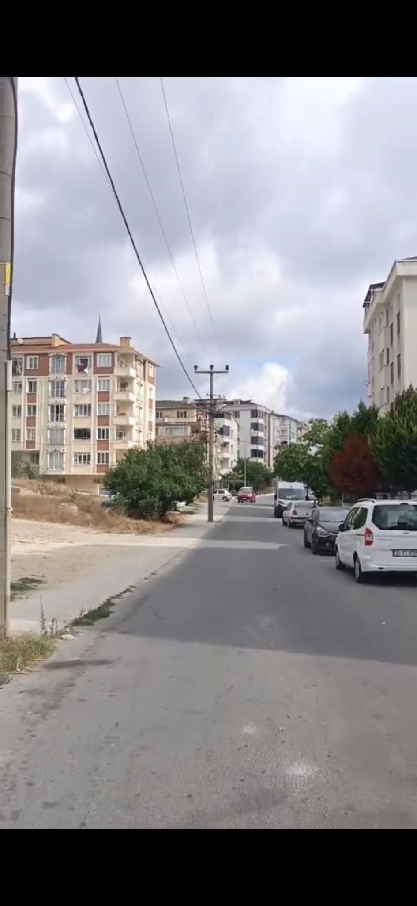

ŞNT-2026-0418
Onayınızı bekliyor
Yıldız Konutları B Blok
Ege Yapı İnşaat Ltd. Şti. · Kemalpaşa Santrali · 14,2 km
Pompalı (42 m bom) · ~180 m³ · ilk döküm 21.11.2026 08:00
Tesis şefi Murat Yıldız gönderdi · 19.11.2026 09:42
YZ özeti
5 madde
- 1Pompa alanının üzerinden havai hat geçiyor. Yerinde ölçülen mesafe 8,2 m, yani 7,5–10 m bandında.
- 2İlk analizdeki 2 çelişki ilave bilgiyle giderildi: ölçüm fotoğrafı ve zemin fotoğrafı geldi.
- 3Tesis şefi sevkiyatı 4 ilave tedbirle onayladı.
- 421.11 için %60 yağış bekleniyor. Şantiyeden yağışta erteleme taahhüdü alındı.
- 5Pompacı ve şantiye formları imzalı, eksik belge yok.
YZ risk skoruilave bilgi sonrası yeniden analiz
78
Yüksek
46
Orta
050100
Kritik fotoğraflar3 / 7 · kaydırın
 HAVAİ HAT
HAVAİ HAT
8,2 m
ÖLÇÜM

GÜZERGAH
MY
Onayladı
Murat Yıldız · Tesis Şefi
Form 01 imzalı · 19.11.2026 09:40
İlave tedbirler
- Kurulum ve döküm boyunca işaretçi bulundurulacak
- Hat tarafına bariyer şeridi çekilecek
- Bom, hattın ters cephesinde açılacak
- Yağış halinde döküm ertelenecek
"Ölçüm 8,2 m çıktı, bariyerleme planı uygun. Yağış tahmini nedeniyle döküm sabahı teyit alacağım." — Murat Yıldız
Tüm detaylar
Formlar
Form 02 · İSG Uygunluk BeyanıKemal Aydın · 17.11 16:40
Form 03 · Pompa DeğerlendirmesiSerkan Demir · 18.11 10:15 · ek: 19.11
Form 01 · Sevkiyat DeğerlendirmesiMurat Yıldız · 19.11 09:40
İz kaydı
- Bölge onayına gönderildi19.11 09:42 · Murat Yıldız
- YZ yeniden analiz: Orta (46)19.11 09:05 · çelişkiler giderildi
- İlave bilgi geldi19.11 08:51 · ölçüm, zemin fotoğrafı, bariyerleme planı
- İlave bilgi istendi18.11 11:02 · YZ taslağı kullanıldı
- YZ ön analizi: Yüksek (78)18.11 10:17 · 2 çelişki, 1 eksik